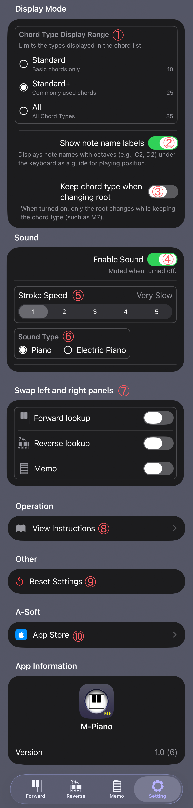

App Settings
In Setting, you can configure the behavior and display of M-Piano.
Display options for Forward and Memo
can also be changed here.

① Chord Type Display Range
Sets the range of chord types shown in Forward. You can display only basic chords or include more advanced chord types.
② Show Note Name Labels
Toggle the display of note name labels on the keyboard. Useful when learning while checking note names.
③ Keep Chord Type When Changing Root
Determines whether the currently selected chord type is kept when the root note is changed.
④ Sound On
Controls whether sound is played when checking chords or tapping the keyboard. When turned off, no sound will play.
⑤ Stroke Speed
Adjusts the stroke speed when playing chords. Useful when you want to listen more slowly or simulate a natural playing feel.
⑥ Sound Type
Select the playback sound.
1: Piano
2: Electric Piano
⑦ Swap Left and Right Panels
On devices with split-screen layouts such as iPad, this swaps the left and right panel positions.
⑧ View Help
Opens the M-Piano help pages. You can check how to use each screen.
⑨ Reset Settings
Restores all settings changed in Setting back to their default values.
⑩ App Store
Opens the App Store page where you can post a review or view app information.